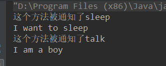
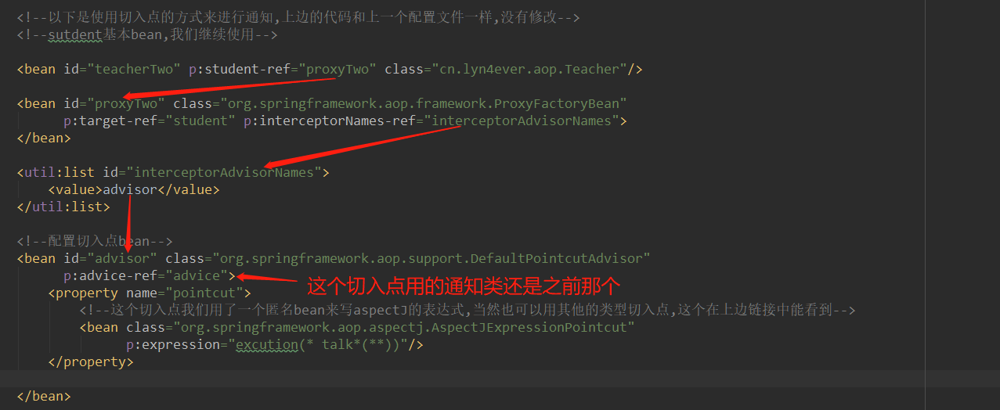
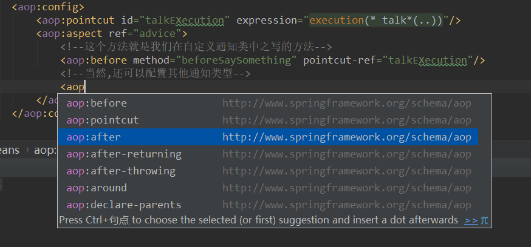
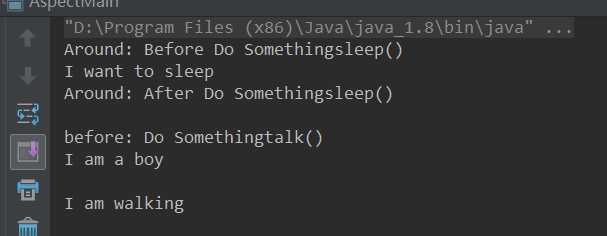

之前的aop是通过手动创建代理类来进行通知的，但是在日常开发中，我们并不愿意在代码中硬编码这些代理类，我们更愿意使用DI和IOC来管理aop代理类。Spring为我们提供了以下方式来使用aop框架
ProxyFactoryBean类是FactoryBean的一个实现类，它允许指定一个bean作为目标，并且为该bean提供一组通知和顾问（这些通知和顾问最终会被合并到一个AOP代理中）它和我们之前的ProxyFactory都是Advised的实现。
以下是一个简单的例子：一个学生和一个老师，老师会告诉学生应该做什么。
public class Student {
public void talk() {
System.out.println("I am a boy");
}
public void walk() {
System.out.println("I am walking");
}
public void sleep() {
System.out.println("I want to sleep");
}
}老师类
public class Teacher {
private Student student;
public void tellStudent(){
student.sleep();
student.talk();
}
public Student getStudent() {
return student;
}
public void setStudent(Student student) {
this.student = student;
}
}package cn.lyn4ever.aop;
import org.aspectj.lang.JoinPoint;
public class AuditAdvice implements MethodBeforeAdvice {
@Override
public void before(Method method, Object[] objects, @Nullable Object o) throws Throwable {
System.out.println("这个方法被通知了" + method.getName());
}
}<?xml version="1.0" encoding="UTF-8"?>
<beans xmlns="http://www.springframework.org/schema/beans"
xmlns:xsi="http://www.w3.org/2001/XMLSchema-instance"
xmlns:util="http://www.springframework.org/schema/util" xmlns:p="http://www.springframework.org/schema/p"
xsi:schemaLocation="http://www.springframework.org/schema/beans
http://www.springframework.org/schema/beans/spring-beans.xsd
http://www.springframework.org/schema/util
https://www.springframework.org/schema/util/spring-util.xsd">
<!--注入student-->
<bean name="student" class="cn.lyn4ever.aop.aopconfig.Student">
</bean>
<!--注入teacher-->
<bean name="teacher" class="cn.lyn4ever.aop.aopconfig.Teacher">
<!--注意,这个student的属性要是上边的代理类,而不是能student-->
<!--<property name="student" ref="student"/>-->
<property name="student" ref="proxyOne"/>
</bean>
<!--注入我们创建的通知类-->
<bean id="advice" class="cn.lyn4ever.aop.aopconfig.AuditAdvice"></bean>
<!--创建代理类，使用前边写的通知进行通知，这样会使这个类上的所有方法都被通知-->
<bean name="proxyOne" class="org.springframework.aop.framework.ProxyFactoryBean" p:target-ref="student"
p:interceptorNames-ref="interceptorNames">
<!--因为interceptorNames的属性是一个可变参数,也就是一个list-->
</bean>
<!--在上边引入了util的名称空间,简化了书写-->
<util:list id="interceptorNames">
<value>advice</value>
</util:list>
</beans> public static void main(String[] args) {
GenericXmlApplicationContext context = new GenericXmlApplicationContext();
context.load("application1.xml");
context.refresh();
Teacher teacher = (Teacher) context.getBean("teacherOne");
teacher.tellStudent();
}运行结果没有问题

<?xml version="1.0" encoding="UTF-8"?>
<beans xmlns="http://www.springframework.org/schema/beans"
xmlns:xsi="http://www.w3.org/2001/XMLSchema-instance"
xmlns:util="http://www.springframework.org/schema/util" xmlns:p="http://www.springframework.org/schema/p"
xsi:schemaLocation="http://www.springframework.org/schema/beans
http://www.springframework.org/schema/beans/spring-beans.xsd
http://www.springframework.org/schema/util
https://www.springframework.org/schema/util/spring-util.xsd">
<!--注入student-->
<bean name="student" class="cn.lyn4ever.aop.aopconfig.Student">
</bean>
<!--注入teacher-->
<bean name="teacherOne" class="cn.lyn4ever.aop.aopconfig.Teacher">
<!--注意,这个student的属性要是上边的代理类,而不是能student-->
<!--<property name="student" ref="student"/>-->
<property name="student" ref="proxyOne"/>
</bean>
<!--注入我们创建的通知类-->
<bean id="advice" class="cn.lyn4ever.aop.aopconfig.AuditAdvice"></bean>
<!--创建代理类，使用前边写的通知进行通知，这样会使这个类上的所有方法都被通知-->
<bean name="proxyOne" class="org.springframework.aop.framework.ProxyFactoryBean" p:target-ref="student"
p:interceptorNames-ref="interceptorNames">
<!--因为interceptorNames的属性是一个可变参数,也就是一个list-->
</bean>
<!--在上边引入了util的名称空间,简化了书写-->
<util:list id="interceptorNames">
<value>advice</value>
</util:list>
<!--以下是使用切入点的方式来进行通知,上边的代码和上一个配置文件一样,没有修改-->
<!--sutdent基本bean,我们继续使用-->
<bean name="teacherTwo" p:student-ref="proxyTwo" class="cn.lyn4ever.aop.aopconfig.Teacher"/>
<bean id="proxyTwo" class="org.springframework.aop.framework.ProxyFactoryBean"
p:target-ref="student" p:interceptorNames-ref="interceptorAdvisorNames">
</bean>
<util:list id="interceptorAdvisorNames">
<value>advisor</value>
</util:list>
<!--配置切入点bean-->
<bean id="advisor" class="org.springframework.aop.support.DefaultPointcutAdvisor"
p:advice-ref="advice">
<property name="pointcut">
<!--这个切入点我们用了一个匿名bean来写aspectJ的表达式,当然也可以用其他的类型切入点,这个在上边链接中能看到-->
<bean class="org.springframework.aop.aspectj.AspectJExpressionPointcut"
p:expression="execution(* talk*(..))"/>
</property>
</bean>
</beans>

在xml中引入如下的名称空间，为了不被影响，我册了其他多余的名称空间。然后很普通地注入我们之前那三个bean
<?xml version="1.0" encoding="UTF-8"?>
<beans xmlns="http://www.springframework.org/schema/beans"
xmlns:xsi="http://www.w3.org/2001/XMLSchema-instance"
xmlns:aop="http://www.springframework.org/schema/aop"
xsi:schemaLocation="http://www.springframework.org/schema/beans
http://www.springframework.org/schema/beans/spring-beans.xsd
http://www.springframework.org/schema/aop
http://www.springframework.org/schema/aop/spring-aop.xsd
">
<!--通过普通的方式来注入三个bean-->
<!--注入student-->
<bean name="student" class="cn.lyn4ever.aop.aopconfig.Student"/>
<!--注入teacher-->
<bean name="teacherOne" class="cn.lyn4ever.aop.aopconfig.Teacher">
<property name="student" ref="student"/>
</bean>
<!--注入我们创建的通知类-->
<bean id="advice" class="cn.lyn4ever.aop.proxyfactory.BeforeAdvice"/>
<aop:config>
<aop:pointcut id="talkExecution" expression="execution(* talk*(..))"/>
<aop:aspect ref="advice">
<!--这个方法就是我们在自定义通知类中之写的方法-->
<aop:before method="beforeSaySomething" pointcut-ref="talkExecution"/>
<!--当然,还可以配置其他通知类型-->
</aop:aspect>
</aop:config>
</beans>在这个配置中，我们还可以配置其他类型的通知，但是这个method属性一定要写我们自定义的那个通知类中的方法

<aop:pointcut id="talkExecution" expression="execution(* talk*(..)) and args(String) and bean(stu*)"/>
<!--
中间的这个and表示和，也可以用or来表示或
args(String) 意思是参数类型是string,也可是自定义的类，这个后边有例子
bean(stu*) 意思是bean的id是以stu开头的，常用的就是用bean(*Service*)来表示服务层的bean
-->虽然是通过注解的方式来声明注解类，但是还是需要在xml中配置一点点内容（通过注解的方式也可以配置，但是在springboot中要使用的话有更方便的方式）
package cn.lyn4ever.aop.aspectj;
import cn.lyn4ever.aop.aopconfig.Teacher;
import org.springframework.stereotype.Component;
/**
* 声明这是一个SpringBean,由Spring来管理它
*/
@Component
public class HighStudent {
public void talk() {
System.out.println("I am a boy");
}
public void walk() {
System.out.println("I am walking");
}
/**
* 这个方法添加一个teacher来做为参数,为了配置后边切入点中的args()
* @param teacher
*/
public void sleep(Teacher teacher) {
System.out.println("I want to sleep");
}
}package cn.lyn4ever.aop.aspectj;
import cn.lyn4ever.aop.aopconfig.Teacher;
import org.aspectj.lang.JoinPoint;
import org.aspectj.lang.ProceedingJoinPoint;
import org.aspectj.lang.annotation.Around;
import org.aspectj.lang.annotation.Aspect;
import org.aspectj.lang.annotation.Before;
import org.aspectj.lang.annotation.Pointcut;
import org.springframework.stereotype.Component;
/**
* 声明切面类,也就是包括切点和通知
*/
@Component //声明交由spring管理
@Aspect //表示这是一个切面类
public class AnnotatedAdvice {
/*
创建切入点,当然也可以是多个
*/
@Pointcut("execution(* talk*(..))")
public void talkExecution(){}
@Pointcut("bean(high*)")//这里为什么是high,因为我们这回测试bean是highStudent
public void beanPoint(){}
@Pointcut("args(value)")
public void argsPoint(Teacher value){}
/*
创建通知,当然也可以是多个
这个注解的参数就是上边的切入点方法名,注意有的还带参数
这个通知方法的参数和之前一样,榀加JoinPoint,也可不加
*/
@Before("talkExecution()")
public void doSomethingBefore(JoinPoint joinPoint){
System.out.println("before: Do Something"+joinPoint.getSignature().getName()+"()");
}
/**
* 环绕通知请加上ProceedingJoinPoint参数 ,它是joinPoint的子类
* 因为你要放行方法的话,必须要加这个
* @param joinPoint
* @param teacher
*/
@Around("argsPoint(teacher) && beanPoint()")
public Object doSomethindAround(ProceedingJoinPoint joinPoint, Teacher teacher) throws Throwable {
System.out.println("Around: Before Do Something"+joinPoint.getSignature().getName()+"()");
Object proceed = joinPoint.proceed();
System.out.println("Around: After Do Something"+joinPoint.getSignature().getName()+"()");
return proceed;
}
}<?xml version="1.0" encoding="UTF-8"?>
<beans xmlns="http://www.springframework.org/schema/beans"
xmlns:xsi="http://www.w3.org/2001/XMLSchema-instance"
xmlns:aop="http://www.springframework.org/schema/aop"
xmlns:context="http://www.springframework.org/schema/context"
xsi:schemaLocation="http://www.springframework.org/schema/beans
http://www.springframework.org/schema/beans/spring-beans.xsd
http://www.springframework.org/schema/aop
http://www.springframework.org/schema/aop/spring-aop.xsd http://www.springframework.org/schema/context https://www.springframework.org/schema/context/spring-context.xsd">
<!--通知Spring扫描@Aspect注解-->
<aop:aspectj-autoproxy/>
<!--配置扫描包,扫描@Component-->
<context:component-scan base-package="cn.lyn4ever.aop.aspectj"/>
</beans>
@Configuration //声明这是一个配置类
@ComponentScan("cn.lyn4ever.aop.aspectj")
@EnableAspectJAutoProxy(proxyTargetClass = true)//相当于xml中的<aop:aspectj-autoproxy/>
public class BeanConfig {
}
package cn.lyn4ever.aop.aspectj;
import cn.lyn4ever.aop.aopconfig.Teacher;
import org.springframework.context.annotation.AnnotationConfigApplicationContext;
import org.springframework.context.support.GenericApplicationContext;
import org.springframework.context.support.GenericXmlApplicationContext;
public class AspectMain {
public static void main(String[] args) {
// xmlConfig();
javaConfig();
}
private static void javaConfig() {
GenericApplicationContext context = new AnnotationConfigApplicationContext(BeanConfig.class);
HighStudent student = (HighStudent) context.getBean("highStudent");
student.sleep(new Teacher());//应该被环绕通知
System.out.println();
student.talk();//前置通知
System.out.println();
student.walk();//不会被通知
System.out.println();
}
private static void xmlConfig(){
GenericXmlApplicationContext context = new GenericXmlApplicationContext();
context.load("application_aspect.xml");
context.refresh();
HighStudent student = (HighStudent) context.getBean("highStudent");
student.sleep(new Teacher());//应该被环绕通知
System.out.println();
student.talk();//前置通知
System.out.println();
student.walk();//不会被通知
System.out.println();
}
}